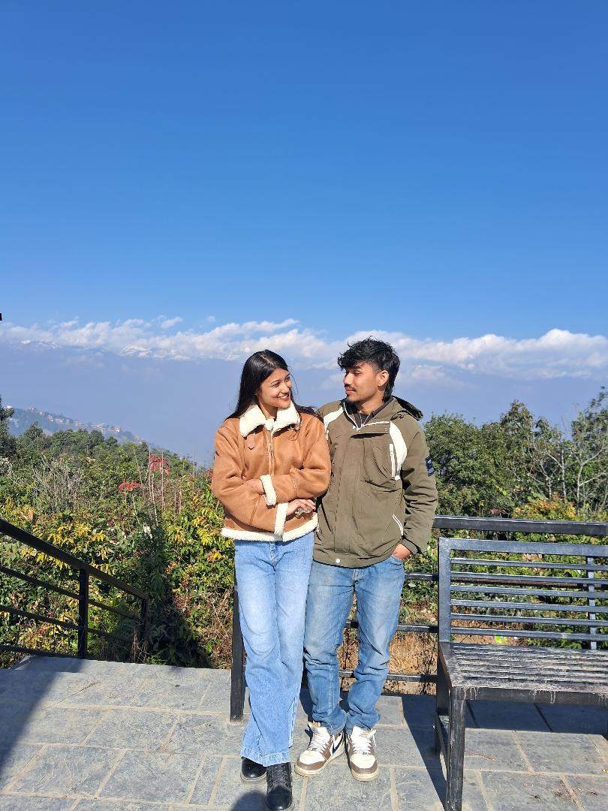
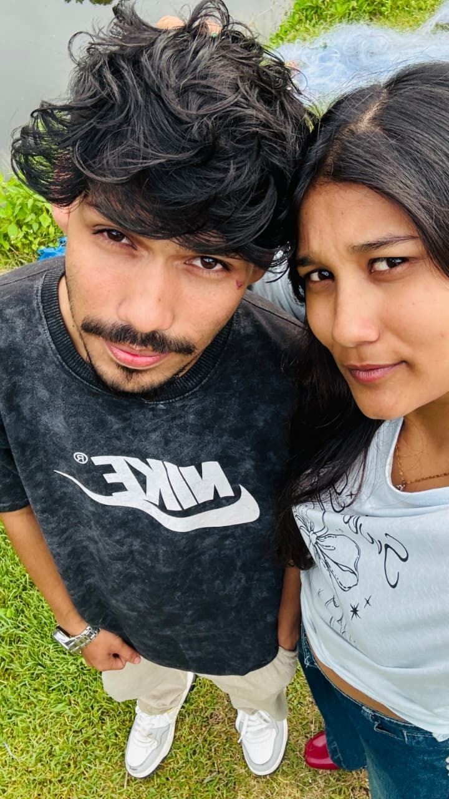
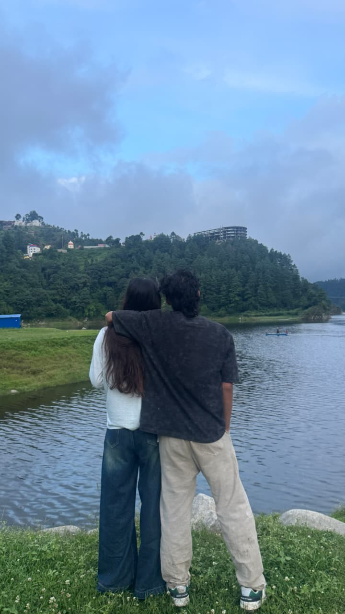

Every good story needs a soundtrack. Here's ours — and let's start with your favorite song.
Two dates, one very good decision.
We actually met before this day, online. From there, we became friends on Facebook, and little by little, you became someone I really admired. I was probably your biggest admirer without you even knowing how much I noticed and appreciated you.
But November 1, 2025 was different. It was the first time I finally saw you face to face. After knowing you online, seeing you standing right in front of me felt so special. And honestly, you looked even more beautiful than I had imagined. I still remember that moment, and I think I always will. ❤️
One of the moments I'll always keep in my heart is the day we went to Nagarkot. The beautiful view, the peaceful sky, and the quiet moments we shared brought a kind of peace to my heart that I can't really explain.
But honestly, the view wasn't the most beautiful thing I saw that day. It was you. A beautiful view with a beautiful person beside me — what more could I ask for? ❤️
That day felt peaceful, simple, and special. It's one of those memories I wish I could go back to and live again.
Boat rides on quiet water, sunny afternoons that turned into golden evenings, and the kind of easy laughter that only happens with someone who feels like home. Every photo below is a small proof of that.
A few frames from Nagarkot, and everywhere after.


